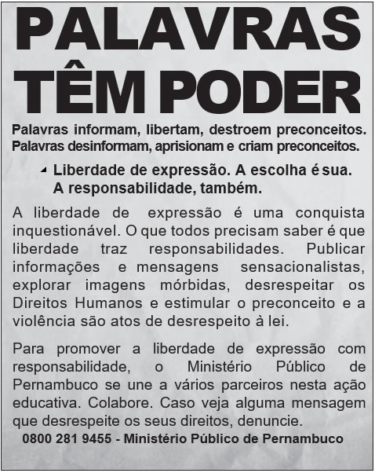

Você acertou 10 de 10 perguntas. Sua nota é 100%!
Millennials: Así es la generación que ya no recuerda cómo era el mundo sin Internet
Algunos los llaman generación Y, otros “Millennials”, generación del milenio o incluso “Echo Boomers”.
Nacieron y crecieron en una era de rápido desarrollo de las nuevas tecnologías, y casi no recuerdan cómo era el mundo sin Internet.
Son idealistas, impacientes y están bien preparados académicamente. Muchos de ellos han tenido oportunidad de viajar por el mundo a una edad temprana, de estudiar en las mejores universidades y de trabajar en empresas multinacionales y extranjeras.
La generación Y se compone de este tipo de personas que quieren todo a la vez. No están dispuestos a soportar un trabajo poco interesante y rutinario, no quieren dejar las cosas buenas para luego. Lo que sí quieren es dejar su huella en la historia, vivir una vida interesante, formar parte de algo grande, crecer y desarrollarse, cambiar el mundo que les rodea, y no solo ganar dinero.
O texto aponta características e interesses da “Geração Y”. Nele, a expressão dejar su huella refere-se a um dos desejos dessa geração, que é o de
El Hombre Electrónico
¿Cuántas veces has cambiado de móvil? ¿Cuántos ordenadores has tenido ya? ¿Tienes cámara digital, IPOD, Nintendo Wii y televisión de pantalla de plasma? Ordenadores, teléfonos móviles, GPS, walkmans, televisiones, lavadoras, tostadores, aspiradores y un larguísimo etcétera. Todos usamos aparatos eléctricos que tarde o temprano se convertirán en residuos. El Hombre Electrónico mide 7 metros de altura y pesa 3,3 toneladas. Es una escultura hecha con la cantidad de residuos eléctricos y electrónicos que un ciudadano medio (en el Reino Unido) tirará a la basura a lo largo de su vida, si se sigue consumiendo este tipo de productos al ritmo actual. El Hombre Electrónico ha sido diseñado por el escultor Paul Bomini con objetivo de aumentar la conciencia de los ciudadanos a la hora de consumir aparatos eléctricos. Esta campaña parte de la base de que todos compramos aparatos electrónicos como herramientas de trabajo u ocio, pero haciéndonos unas cuantas preguntas podemos inducir cambios en nuestro comportamiento que beneficiarán al medio ambiente, otras personas y a nosotros mismos: ¿Tienes algún aparato eléctrico o electrónico que no necesitas?
¿Podrías ser más responsable a la hora de comprar un nuevo producto electrónico?
¿Podrías reciclar o reparar estos productos una vez que se han quedado obsoletos o se han roto? ¿Intentas ahorrar energia en tu vida diaria?
Considerando a necessidade de assumir uma conduta mais responsável com o meio ambiente, Paul Bomini criou a escultura O homem eletrônico para
Adelfos
Yo soy como las gentes que a mi tierra vinieron
— soy de la raza mora, vieja amiga del sol —,
que todo lo ganaron y todo lo perdieron.
Tengo el alma de nardo del árabe español.
Nessa estrofe, o poeta e dramaturgo espanhol Manuel Machado reflete acerca
Que hay de cierto en la fábula de la cigarra y la hormiga
Cuenta una conocida fábula que, tras pasar todo un verano cantando y ociosa, una cigarra se encontró sin alimento y decidió pedir a su vecina, la hormiga algo que llevarse a la boca. Esta le ofreció granos de arroz acompañados de una moraleja: más vale prevenir que lamentar. ¿Merecen su fama de previsoras y afanosas las hormigas? Sin duda. Las hormigas cortadoras de hojas (Atta cephalotes), por ejemplo, son consideradas las primeras agricultoras del planeta, dedicadas a cortar, acarrear e integrar hojas en el jardín de hongos del que se alimentan. Otro dato curioso es que se ha comprobado que, prácticamente en todas las especies de hormigas, las más ancianas asumen trabajos de mayor riesgo. De acuerdo con Dawid Moron de la Universidad de Jagiellonian (Polonia), esto se debe a que es mejor para la colonia sacrificar una vida que está cerca de su fin que a un individuo joven.
En cuanto a las cigarras, no se les puede acusar de perezosas. Lo que sí es cierto es que los machos pasan el verano “cantando” — un sonido que producen con unas membranas llamadas timbales — y encaramados a un árbol, de cuya savia se alimentan.
A fábula é um gênero de ampla divulgação frequentemente revisitado com diversos objetivos. No texto, a fábula A cigarra e a formiga é retomada para
Empanada
Overa en bayo claro,
vaquilla echada, eres del vino tinto
la camarada.
[...]
Vienes llena de pino,
cebolla y carne,
con pasas, huevo duro,
y aliño de hambre.
Con el primer mordisco
por una oreja,
se abre tu boca ardiente
como sorpresa.
Te la lleno de pebre
quedas picante
si te beso muy fuerte,
no me reclames.
Busco, loco, en tu vientre,
delicia oscura,
la traición exquisita
de tu aceituna.
[...]
Y repite el ataque
por andanadas:
Nadie queda con hambre
si hay empanadas.
A gastronomia é uma das formas de expressão cultural de um povo. Nesse poema, ao personificar as empanadas, o escritor chileno Antrix
Um amor desse
Era 24 horas lado a lado
Um radar na pele, aquele sentimento alucinado
Coração batia acelerado
Bastava um olhar pra eu entender
Que era hora de me entregar pra você
Palavras não faziam falta mais
Ah, só de lembrar do seu perfume
Que o meu corpo sente
Nem que eu queira, eu te apago da minha mente
Ah, esse amor
Deixou marcas no meu corpo
Ah, esse amor
Só de pensar, eu grito, eu quase morro
Essa letra de canção foi composta especialmente para uma campanha de combate à violência contra as mulheres, buscando conscientizá-las acerca do limite entre relacionamento amoroso e relacionamento abusivo. Para tanto, a estratégia empregada na letra é a
A Declaração Universal dos Direitos Humanos, adotada e proclamada pela Assembleia Geral da ONU na Resolução 217-A, de 10 de dezembro de 1948, foi um acontecimento histórico de grande relevância. Ao afirmar, pela primeira vez em escala planetária, o papel dos direitos humanos na convivência coletiva, pode ser considerada um evento inaugural de uma nova concepção de vida internacional.
A declaração citada no texto introduziu uma nova concepção nas relações internacionais ao possibilitar a
Pela análise do conteúdo, constata-se que essa campanha publicitária tem como função social
Mídias: aliadas ou inimigas da educação física escolar?
No caso do esporte, a mediação efetuada pela câmera de TV construiu uma nova modalidade de consumo: o esporte telespetáculo, realidade textual relativamente autônoma face à prática “real” do esporte, construída pela codificação e mediação dos eventos esportivos efetuados pelo enquadramento, edição das imagens e comentários, interpretando para o espectador o que ele está vendo. Esse fenômeno tende a valorizar a forma em relação ao conteúdo, e para tal faz uso privilegiado da linguagem audiovisual com ênfase na imagem cujas possibilidades são levadas cada vez mais adiante, em decorrência dos avanços tecnológicos. Por outro lado, a narração esportiva propõe uma concepção hegemônica de esporte: esporte é esforço máximo, busca da vitória, dinheiro... O preço que se paga por sua espetacularização é a fragmentação do fenômeno esportivo. A experiência global do ser-atleta é modificada: a sociabilização no confronto e a ludicidade não são vivências privilegiadas no enfoque das mídias, mas as eventuais manifestações de violência, em partidas de futebol, por exemplo, são exibidas e reexibidas em todo o mundo.
A reflexão trazida pelo texto, que aborda o esporte telespetáculo, está fundamentada na
Meu caro Sherlock Holmes, algo horrível aconteceu às três da manhã no Jardim Lauriston. Nosso homem que estava na vigia viu uma luz às duas da manhã saindo de uma casa vazia. Quando se aproximou, encontrou a porta aberta e, na sala da frente, o corpo de um cavalheiro bem vestido. Os cartões que estavam em seu bolso tinham o nome de Enoch J. Drebber, Cleveland, Ohio, EUA. Não houve assalto e nosso homem não conseguiu encontrar algo que indicasse como ele morreu. Não havia marcas de sangue, nem feridas nele. Não sabemos como ele entrou na casa vazia. Na verdade, todo assunto é um quebra-cabeça sem fim. Se puder vir até a casa seria ótimo, se não, eu lhe conto os detalhes e gostaria muito de saber sua opinião. Atenciosamente, Tobias Gregson.Meu caro Sherlock Holmes, algo horrível aconteceu às três da manhã no Jardim Lauriston. Nosso homem que estava na vigia viu uma luz às duas da manhã saindo de uma casa vazia. Quando se aproximou, encontrou a porta aberta e, na sala da frente, o corpo de um cavalheiro bem vestido. Os cartões que estavam em seu bolso tinham o nome de Enoch J. Drebber, Cleveland, Ohio, EUA. Não houve assalto e nosso homem não conseguiu encontrar algo que indicasse como ele morreu. Não havia marcas de sangue, nem feridas nele. Não sabemos como ele entrou na casa vazia. Na verdade, todo assunto é um quebra-cabeça sem fim. Se puder vir até a casa seria ótimo, se não, eu lhe conto os detalhes e gostaria muito de saber sua opinião.
Atenciosamente, Tobias Gregson.
Considerando o objetivo da carta de Tobias Gregson, a sequência de enunciados negativos presente nesse texto tem a função de